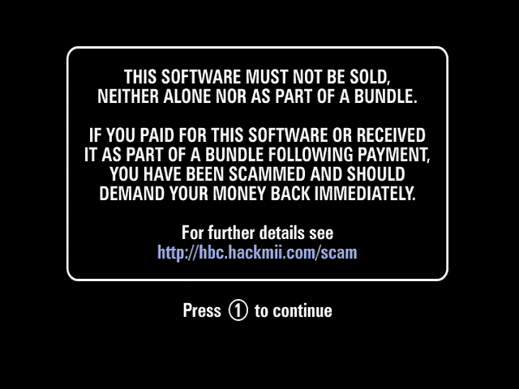
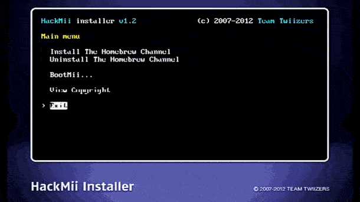
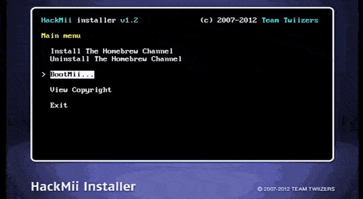

Wii软破指南
Homebrew
你会看到诈骗警告,等30秒,出现Press 1 to continue 按1

按Continue,选Install the Homebrew Channel,选择Yes, continue,最后按Continue

选择BootMii...,选Install BootMii as IOS,选择2次Yes, continue 按Continue,最后选择Return to the main menu

选择Exit
使用BootMii备份NAND
感谢
WiiBrew
和
Wii Guide
!